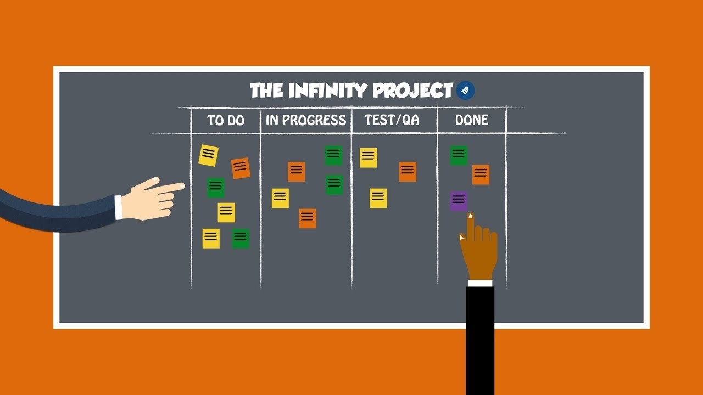
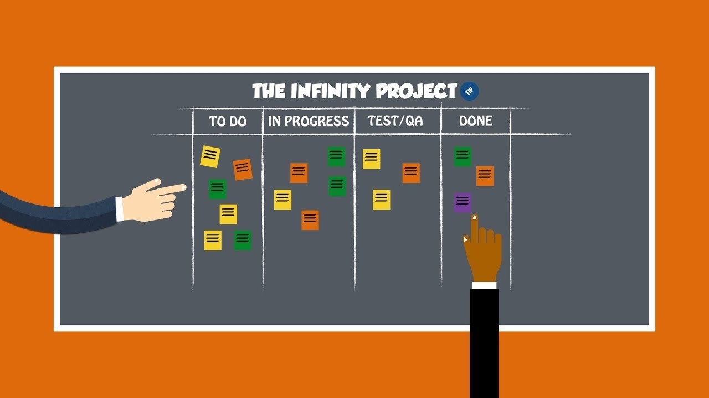

Especificaciones
Equipo de 5 personas
Un Product Owner
Un Scrum Master
3 Team Scrum
 

Equipo de 5 personas
Un Product Owner
Un Scrum Master
3 Team Scrum
Gestionar el contenido por medio de Git Hub
Coordinación de los avances tiene que ser por medio de la herramienta Trello

Costará de 3 páginas:
Teoría Básica Ingeniería de software
Scrum
Información de desarrolladores